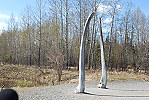

|
#A Native American guide explaining things about her culture. |
#The bones of a whale. |
Tells how the community house was used. |
|
#The Inupiaq and ST. Lawrence Island Yupik community house. |

Whale bones signifying a powerful chief lives here. |
Another placard describing one of the five Native American groupings. |
|
#Our guide explaining how all the utensils laid out on the floor were used. |
A view of the almost arched roof with fishing traps on the back wall. |
Outside of the dwelling with our guide. |